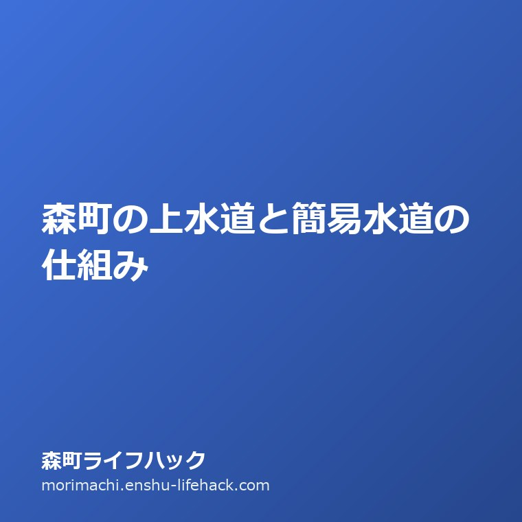

地区めぐり
森町の上水道と簡易水道の仕組み｜山間部の水管理と実家の維持費用

この記事の要点
Q. 森町の実家が空き家になった時の水道手続きは？冬の凍結破損を防ぐには？
A. 敷地内の止水栓（元栓）を閉め、冬期前に給湯器や配管の水抜きを徹底します。長期間使用しない場合は役場上下水道課へ使用休止届を出して基本料金を抑えます。
導入——森町の実家管理で最初に見落とされがちな「水」のインフラ
静岡県周智郡森町に実家があり、親の施設入所や他界に伴って家を空き家として管理することになった際、多くの家族が最初に見落としてトラブルになりがちなのが「水道」と「給水設備」の管理です。
清流・太田川が中央を流れる森町は水資源に大変恵まれた美しい町ですが、その水道インフラの構造は、町中心部の平野部と山間部の集落で大きく異なっています。一般的な都市部の感覚で「使っていないから水道代はかからないだろう」「バルブをそのままにしておけば大丈夫」と思い込んでいると、思わぬ高額請求や冬期の水道管破裂事故に見舞われることになります。
この記事で整理したい最初の問いは、「周智郡森町の実家を空き家として維持したり、将来的に売却・解体したりする際、上水道と簡易水道の仕組みはどうなっており、どのような手続きと費用管理が必要になるのか」です。
結論を先に申し上げれば、森町の水道は町営の上水道給水区域と、三倉や天方などの中山間集落を支える簡易水道・小規模給水施設（地元水道組合管理）に分かれています。長期間家を空ける際には、森町役場上下水道課への「給水使用休止届」の提出、あるいは地区の水道組合長への連絡を確実に行い、冬期前の「水抜き」を徹底することが不可欠です。
特に森町北部の山間地では、冬期の夜間に氷点下まで冷え込むことが珍しくありません。水抜きを怠って屋外の水道管や給湯器が凍結破裂すると、床下浸水事故を引き起こし、空き家全体の資産価値を大きく損なう原因となります。
本稿では、森町の公式資料から上水道・水道事業の基本構造を整理したうえで、不動産売買や空き家管理の現場実務を踏まえた「失敗しない水まわり管理」の手順を詳しく解説します。

まず、公式資料から事実を整理する
森町が公表している水道事業概要および上下水道課の届出案内によると、森町内の水道事業は安全な飲料水の安定供給と公衆衛生の向上を目的に厳格に管理されています。
町営上水道の給水区域は、主に森地区、飯田地区、園田地区、一宮地区などの平野部および主要集落を中心に広がっています。水源としては太田川水系の伏流水や深井戸地下水などを取水し、町内の浄水場・配水池を通じて各家庭へ圧送されています。
森町の上水道料金体系は、メーター口径に応じた「基本料金」と、使用水量に応じて段階的に単価が上がる「従量料金」を合算して2ヶ月ごとに請求される仕組み（偶数月または奇数月の定期検針）となっています。一般的な一般家庭用のメーター口径（13mmまたは20mm）では、水を使用していなくても毎月一定額の基本料金が発生します。
一方、太田川の上流部に位置する天方地区や三倉地区などの山あいの集落においては、町営上水道の配水管が届いていないエリアが存在し、そこでは「簡易水道」や「地区小規模給水施設」が地域住民の生活を支えています。
これらの簡易水道施設は、集落に近い山林の沢水や湧水、深井戸を水源とし、地元住民で組織された「水道利用組合」や自治会組織によって自主管理されているケースが多く見られます。
簡易水道の場合、水道料金の徴収や施設の維持修繕（取水場の落ち葉清掃、ろ過タンクの砂替え、配水管の漏水点検など）は組合員である地元住民の共同作業と会費によって賄われています。そのため、町営上水道とは異なる独自の規約や維持費の取り決めが存在します。
また、森町上下水道課では給水契約に関する各種手続きを定めており、住居の異動や長期間の不在時には「給水開始届」「給水使用休止届」「名義変更届」などの書類提出を求めています。届出を怠ったまま放置すると、水を使用していなくても基本料金が延々と課金され続けることになります。
森町での暮らしへの影響——地区差と移動の距離
公式資料に示された水道制度の事実を、空き家や実家を管理する家族の現実的な作業動線に照らし合わせてみましょう。
南部の平野部にある実家であれば、森町役場の本庁舎（上下水道課窓口）へ直接足を運ぶか、郵送や電子申請の手続きを行うことで、水道の休止や名義変更の手続きを比較的スムーズに完了できます。
しかし、北部の天方・三倉地区に実家がある場合、役場への届出だけでなく、地元の「水道組合長」や自治会長への挨拶と確認が極めて重要になります。「実家が空き家になったが、組合費はどう納付すればよいか」「年1回の取水場清掃の出役はどうすればよいか」といった地域独自のルールを把握しておかなければ、近隣住民との間で摩擦が生じる原因になります。
また、森町の実家管理で最も切実なのが「冬期の凍結防止対策」です。森町北部は山に囲まれているため、冬場の朝晩には氷点下4度から5度近くまで気温が下がることがあります。
居住していれば毎日の炊事や入浴で管内の水が動くため凍結しにくいのですが、誰も住んでいない空き家では、水道管内の水が完全に滞留して凍結しやすくなります。凍結した水が氷になると体積が約9％膨張するため、金属管や塩ビパイプが内側から裂けて破裂します。
破裂したことに気付かないまま気温が上がって解氷すると、裂け目から大量の水が家屋の内外に噴き出し、床や畳を腐らせ、数万〜数十万円に及ぶ高額な水道料金が請求されるという大惨事につながります。

良い点：水源豊かな太田川水系と丁寧な水質検査体制
森町の水道環境において高く評価すべき良い点は、何と言っても太田川の最上流・中流域に位置することによる「極めて良質で豊富な水源」に恵まれていることです。
森町役場上下水道課が定期的に実施している水質検査結果を見ても、大腸菌群や一般細菌、重金属類、有機化学物質の検出値は極めて低く、国の水道水質基準を高い水準でクリアしています。カルキ臭の少ないまろやかな軟水は、お茶の産地である森町のお茶の味と香りを最大限に引き出す天然の恵みとなっています。
第二の良い点は、水道メーターの定期検針時における丁寧な漏水監視です。森町の検針員の方々は地域に密着しており、前回の使用量と比較して異常に水量が増えている場合には、不在の家であっても「漏水の疑いがあります」という確認票をポストに残して注意を促してくれます。このきめ細やかな見守り体制は、遠方に住む空き家所有者にとって大変心強い存在です。
第三に、山間部の簡易水道においても、地域コミュニティの強い結束力によって清らかな山の湧水インフラが世代を超えて大切に守り継がれている点です。自分たちの飲む水を自分たちの手で守るという自治の精神は、森町の伝統的な美徳の一つと言えます。
注文したい点：配水管老朽化に伴う更新コストと加入金・負担金の透明性
一方で、将来の森町の住まい継承や不動産流通を見据えたときに、注文したい課題も存在します。
第一に、高度経済成長期に敷設された水道管の老朽化と耐震化のスピードです。森町公共施設等総合管理計画にも記載されている通り、老朽化した配水管の更新には多額の投資が必要となります。人口減少が進む中で、将来的な水道料金の改定や改修費用の負担について、より早期かつ分かりやすい市民への情報公開が求められます。
第二に、簡易水道エリアにおける加入金や権利関係の情報の不透明さです。山間部の空き家を購入して移住したいという希望者が現れた際、町の上下水道課に問い合わせても「簡易水道の引込条件や加入分担金については、現地組合長と直接交渉してください」と案内されることが多く、外部からの移住者にとって大きな心理的ハードルとなっています。組合の連絡先や標準的な加入負担金の一覧を役場で把握・仲介できる窓口機能の強化を望みます。
第三に、水道開閉栓や休止手続きのオンライン化の遅れです。平日日中に役場窓口へ行けない町外在住の家族のために、マイナンバーカードを用いた電子申請システムをさらに拡充してほしいと感じます。
対案・結論——実家じまい・売却時に困らない水道管理3ステップ
これらの実情を踏まえ、森町の実家が空き家になった際、あるいは将来の売却・解体を見据えたときに所有者が取るべき「水道管理の3ステップ」を結論として提案します。
ステップ1は、「敷地内の止水栓（元栓）の場所を把握し、不在時は必ず閉めること」です。水道メーターボックスの蓋を開けると、メーターの横にハンドル式またはレバー式の止水栓があります。これを時計回りに固く回して閉め、家の中の蛇口を開けて水が出ないことを確認します。これだけで、不在中の突発的な屋内漏水事故を100％防ぐことができます。
ステップ2は、「冬期前の完全水抜き（水抜き栓操作）を徹底すること」です。寒波がやってくる11月から12月上旬にかけて実家を訪れ、不凍栓（水抜きバルブ）を開放して屋外配管や給湯器内部の水を抜き切ります。特に給湯器の下部にある水抜き栓を開けて内部の水を排出しておく作業は、器具の破裂による数十万円の修繕費を防ぐ決定打となります。
ステップ3は、「数ヶ月以上使わないなら、役場へ使用休止届を出すこと」です。毎月の基本料金（年間約2万〜3万円程度）を節約するため、役場上下水道課へ「給水使用休止届」を提出します。将来家を再利用する際や売却決済の際には、電話一本で開栓を依頼できます。無駄な維持費を抑えながら、安全に建物を保全していくことが賢い管理です。
家族に残す記録——止水栓の位置・水抜きバルブの配置図と組合連絡先
森町の実家を適正に管理し続けるためには、水まわりの配置情報を家族間で図面やメモとして共有しておくことが欠かせません。
具体的には、「敷地内の水道メーターボックスの正確な位置（玄関前、庭の植木鉢の横など）」「宅内止水栓の開閉方向」「給湯器の水抜き栓の位置」「水道利用明細のお客様番号」「簡易水道の場合は地区の組合長名と電話番号」の5点を家族の共有ノートに記しておきます。
特にメーターボックスは、庭の雑草や落ち葉、土砂に埋もれてしまい、いざ漏水したときにどこにあるか見つからずパニックになる事例が多発しています。見失わないよう、ボックスの周囲を清掃し、目印の杭やプレートを立てておくことをお勧めします。
親御さんが元気なうちに、「水道の元栓はどこにある？」「冬はどうやって水を抜いていた？」と現地で一緒に確認しながらメモを取ることが、将来の予期せぬトラブルを防ぐ最大の備えとなります。
大石の視点——給水装置の確認が不動産売買のトラブルを防ぐ
不動産取引の実務家として森町の土地や古民家の仲介に携わる中で、私が最も神経を尖らせて調査するのが「給水管の埋設経路」と「給水装置の所有権関係」です。
古い住宅地や山間部の集落では、自分の家の水道管がお隣の敷地を通って引き込まれていたり、私設の水道組合から引いているため町営水道に切り替えるには数百万円の工事負担金が必要になったりするケースが珍しくありません。
売買契約を結んだ後で「水道管が他人の土地を通っていてトラブルになった」「水圧が足りず建て替えができない」といった事態が発覚すると、契約解除や損害賠償に発展します。実家の水道を正しく把握しておくことは、単に水道代を節約するだけでなく、その不動産が将来誰かに引き継がれる際の信頼性と価値を担保する極めて重要な法的実務なのです。
まとめ——清流の町・森町で実家の水と暮らしを正しく引き継ぐ
森町の豊かな水は、この町の暮らしと文化を何百年にもわたって潤してきた尊い財産です。
実家が空き家になったとしても、その土地に引かれた給水管は、かつて家族がそこで温かい生活を営んでいた確かな証拠です。適切な止水と水抜き、行政への正しい届出を行うことで、大切な実家を事故から守り、次の世代へ安心な状態で引き継いでいくことができます。
森町の実家の水道管理や将来の売却・解体について疑問や不安がある方は、まずは止水栓の確認と役場上下水道課への相談から、丁寧に向き合ってみてください。
- 森町の水道は町営上水道と山間部の簡易水道・組合管理施設に分かれている。
- 長期間不在時は止水栓を閉め、冬期前に給湯器や配管の水抜きを徹底して凍結破損を防ぐ。
- 使用予定がない場合は役場へ休止届を提出し、無駄な基本料金の発生を抑える。
よくある質問（FAQ）
水道を使っていなくても水道代はかかりますか？
給水契約が継続している限り、メーター口径に応じた基本料金が2ヶ月ごとに請求されます。長期不在時は上下水道課へ「使用休止届」を出すことで基本料金の発生を止められます。
簡易水道のエリアかどうかはどうやって見分ければよいですか？
水道料金の請求元が森町役場上下水道課であれば町営上水道です。集落の水道組合や自治会へ直接納付している場合は簡易水道や小規模給水施設となります。
冬に水道管が凍結破裂したらどうなりますか？
解氷時に大量の水が吹き出して家屋の浸水や床の腐食を招き、高額な水道料金が請求されます。11月〜12月に必ず水抜き栓を操作して配管の水を抜いてください。

磐田市見付で不動産業と高齢者介護事業を営む実務家。周智郡森町の実家じまい・空き家相談・農地山林の引き継ぎを一軒ずつ受けています。公式資料を必ず自分の足と目で確認してから書くことを徹底しています。プロフィール詳細
参考にした公式情報
- 水道事業の概要／静岡県森町（2026年9月11日確認）
- 水道の使用開始・休止手続き／静岡県森町（2026年9月11日確認）
最終確認日：2026-09-11 ／ 本記事は公表情報と執筆者の見解を分けて記載しています。運行時刻や料金、利用条件は改定される場合があるため、最新情報は森町公式窓口でご確認ください。